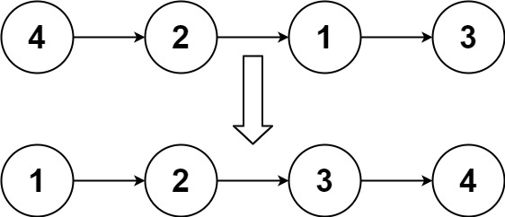
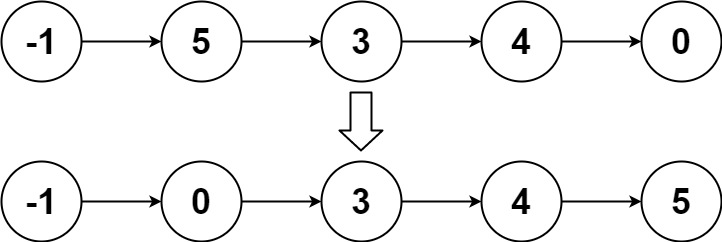

148. 排序链表
自底向上归并排序：步长 step 从 1 翻倍，每趟把链表切成 step 长的小段，相邻两段合并后接回。
思路
- 不用递归：
step从 1 起每趟翻倍，每趟按step个一段把相邻两段两两合并；step >= n时只剩一段，排序完成。 - 每组先切：
cut在第step个结点后切断、返回后面的头，依次切出left、right，剩下的留给cur。 prev.next = merge(left, right)把合并结果接回，再让prev走到这一段的末尾，下一组接在它后面；漏了这一步，后面的结点会丢。- 最后一段不够
step个、或者没有搭档（right == null）时，merge直接返回它自己，照样接回。
图解
最优解
1class Solution {2 public ListNode sortList(ListNode head) {3 int n = 0;4 for (ListNode p = head; p != null; p = p.next) n++;5 ListNode dummy = new ListNode(0, head);6 // step：每段的长度，1、2、4……翻倍，直到整条链表只剩一段7 for (int step = 1; step < n; step <<= 1) {8 // prev：已处理部分的尾结点，cur：还没处理的部分9 ListNode prev = dummy, cur = dummy.next;10 while (cur != null) {11 // 从 cur 起切出相邻两段 left、right，剩下的留给 cur12 ListNode left = cur;13 ListNode right = cut(left, step);14 cur = cut(right, step);15 // 合并后接回 prev 后面，prev 再走到这一段的末尾16 prev.next = merge(left, right);17 while (prev.next != null) prev = prev.next;18 }19 }20 return dummy.next;21 }22 23 // 保留 head 起的前 n 个结点并切断，返回后面部分的头24 private ListNode cut(ListNode head, int n) {25 for (int i = 1; head != null && i < n; i++) head = head.next;26 if (head == null) return null;27 ListNode rest = head.next;28 head.next = null;29 return rest;30 }31 32 // 合并两个升序链表33 private ListNode merge(ListNode a, ListNode b) {34 ListNode dummy = new ListNode(), tail = dummy;35 while (a != null && b != null) {36 if (a.val <= b.val) {37 tail.next = a;38 a = a.next;39 } else {40 tail.next = b;41 b = b.next;42 }43 tail = tail.next;44 }45 tail.next = a != null ? a : b;46 return dummy.next;47 }48}题目
给你链表的头结点 head ，请将其按 升序 排列并返回 排序后的链表 。
示例 1：

输入：head = [4,2,1,3] 输出：[1,2,3,4]
示例 2：

输入：head = [-1,5,3,4,0] 输出：[-1,0,3,4,5]
示例 3：
输入：head = [] 输出：[]
提示：
- 链表中节点的数目在范围
[0, 5 * 104]内 -105 <= Node.val <= 105
进阶：你可以在 O(n log n) 时间复杂度和常数级空间复杂度下，对链表进行排序吗？
题面取自力扣当前版本。
数据快照 2026-11-04。题面版权归力扣所有，本站点仅供本人学习使用，请勿对外发布。